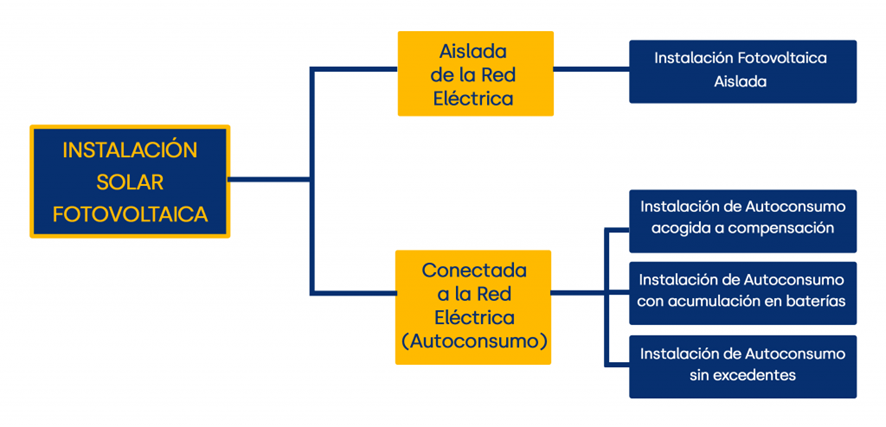
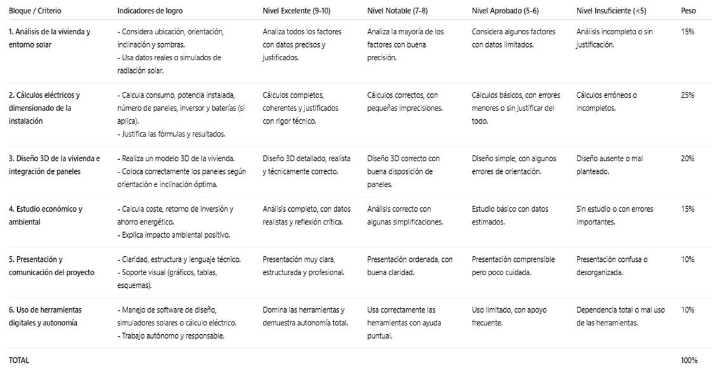

SdA Energías 1º Bachillerato Tecnología e Ingeniería I
4. La energía solar al alcance de todos
Las instalaciones solares fotovoltaicas
Las instalaciones solares fotovoltaicas (FV) nos permiten aprovechar la energía generada por la radiación del sol para convertirla en energía eléctrica y así poder utilizarla en nuestros hogares y lugares de trabajo. Los módulos fotovoltaicos serán los encargados de hacer esta conversión de radiación solar en energía eléctrica continua y más tarde el inversor se encargará de convertirla en alterna para nuestro consumo.
Entre las instalaciones solares fotovoltaicas podemos encontrar diferentes tipos que deberemos estudiar para poder decidir cuál será la más adecuada y acorde a nuestra situación e intereses:

Para poder tomar una decisión coherente se tienen que tener en cuenta varios factores:
· Mis necesidades reales en materia de energía, en este caso, eléctrica.
· La localización y acondicionamiento de mi vivienda/empresa.
· Objetivo a cumplir con la instalación.
· Presupuesto para llevar a cabo la instalación.
Tarea 5
- Agrupamiento:
- Individual
En los últimos años el precio de la electricidad ha ido en ascenso hasta puntos que nunca se habían imaginado. Es necesario tratar de ponerle solución buscando fuentes de energía más baratas y limpias. Para ello, la energía procedente del sol puede ser de gran ayuda.
En esta actividad cada alumno, en el aula de ordenadores durante 3 sesiones, debe diseñar la instalación de una central solar fotovoltaica para su casa o la de algún familiar. Se debe tomar el gasto de kWh de una factura de la luz de la vivienda y se deben buscar los datos sobre radiación solar de la zona.
Con todo ello, y siguiendo los pasos marcados por el profesor en el documento de referencia, se deberá realizar una hoja de cálculo (Excel) con todos los cálculos técnicos, incluidos los costes de instalación según precios que aparezcan en la web.
Tras esto, se debe diseñar la vivienda en 3D en SketchUp incorporando en el tejado las placas solares que entren. Si el espacio es limitado se debe recalcular el Excel teniendo en cuenta esto.
Metodología: Aprendizaje por descubrimiento y basado en proyectos.
Recursos materiales: Ordenadores con internet y facturas de la luz.
Fechas: 12, 13 y 14 de noviembre de 2025.
El profesor guiará en todo momento a los estudiantes durante su investigación.
En caso de no terminar en las sesiones planteadas, se deberá finalizar en casa y la entrega será para todos por Aulas Virtuales y TEAMS.
La evaluación y calificación de esta tarea se realizará mediante la siguiente rúbrica:

Con esta actividad se están trabajando los siguientes criterios de evaluación y sus correspondientes competencias específicas de la legislación actual:
Competencia específica 1. Coordinar y desarrollar proyectos de investigación con una actitud crítica y emprendedora, implementando estrategias y técnicas eficientes de resolución de problemas y comunicando los resultados de manera adecuada, para crear y mejorar productos y sistemas de manera continua.
1.1. Investigar y diseñar proyectos que muestren de forma gráfica la creación y mejora de un producto, seleccionando, referenciando e interpretando información relacionada.
1.4. Elaborar documentación técnica con precisión y rigor, generando diagramas funcionales y utilizando medios manuales y aplicaciones digitales.
Competencia específica 3. Utilizar las herramientas digitales adecuadas, analizando sus posibilidades, configurándolas de acuerdo a sus necesidades y aplicando conocimientos interdisciplinares, para resolver tareas, así como para realizar la presentación de los resultados de una manera óptima.
3.1. Resolver tareas propuestas y funciones asignadas, mediante el uso y configuración de diferentes herramientas digitales de manera óptima y autónoma.
Competencia específica 6. Analizar y comprender sistemas tecnológicos de los distintos ámbitos de la ingeniería, estudiando sus características, consumo y eficiencia energética, para evaluar el uso responsable y sostenible que se hace de la tecnología.
6.1. Evaluar los distintos sistemas de generación de energía eléctrica y mercados energéticos, estudiando sus características, calculando sus magnitudes y valorando su eficiencia.
6.2. Analizar las diferentes instalaciones de una vivienda desde el punto de vista de su eficiencia energética, buscando aquellas opciones más comprometidas con la sostenibilidad y fomentando un uso responsable de las mismas.
Obra publicada con Licencia Creative Commons Reconocimiento Compartir igual 4.0